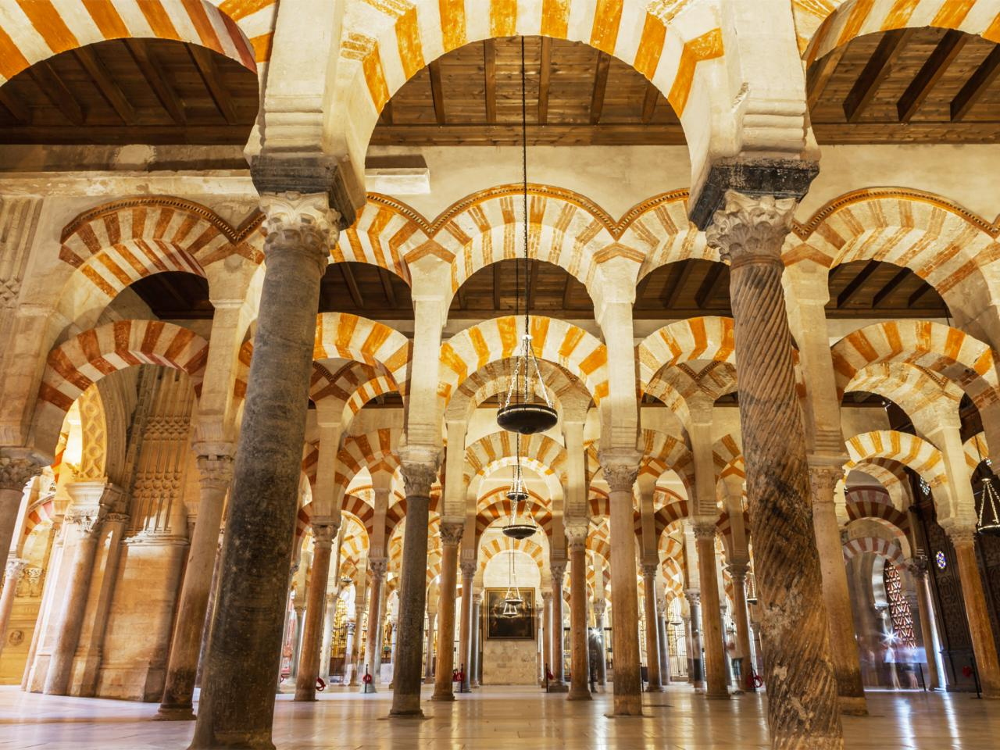
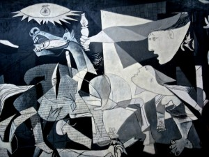
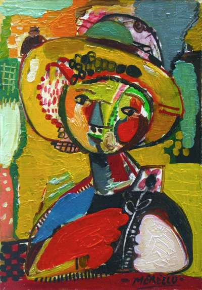

Spanish Architechiture
Spanish art
20th and 21st Century Spanish Architecture
The 20th Century saw the rise of Catalan Modernism, a style that incorporated more natural and organic elements
Gaudí was the leading Spanish architect of this style.
He adorned the city of Barcelona with many fantastic buildings, including his most famous work, La Sagrada Familia
Lluís Domènech i Montaner is also another Spanish architect who developed the Catalan Modernism movement
Today, there are many budding Spanish architects who have passed more into the realms of Modern architecture.
Both Santiago Calatrava and Rafael Moneo have pushed the boundaries of Spanish architecture both in Spain and abroad.

Spain, due to its geographical and historical situation has been the recipient of many different artistic influences over the centuries.
Influences

- Seven centuries of Moorish rule is bound to have left its mark on the Spanish people.This can be seen clearly in the buildings produced by some of the most famous Spanish architects. Lluís i Domènech, the Catalan Spanish architect, often used Moorish decorations to adorn his creations.
- Being a part of the European continent also meant that Spain was subject to a lot of European culture and art. For example, the Spanish dance, the Bolero was influenced by many Italian Ballet specialists while they were travelling around Spain.
- A large number of Spanish painters spent time in France, and especially Paris, where the art scene was booming. Paris was the place to go if you wanted to learn about art. Pablo Picasso famously spent a lot of his time in Paris, which is where he also met the Spanish sculptor, Pablo Gargallo.
Spain also owes the sculptors of Italy and its capital, Rome, a lot of thanks. Without them, one of the most famous Spanish sculptors would never have continued making sculptures. Mariano Benlliure was only convinced that he would concentrate on sculpture after seeing the sculptures of Michelangelo in Rome.
Art is a great way of expressing your inner feelings and emotions, particularly those that hard to express in words, and Spanish artists are particularly good at it.
Expression

Many painters used their artwork as a protest against certain events in Spanish history. For example, Picasso showed his outrage at the bombing of the small town of Guernica during the Spanish Civil War by painting 'Guernica'. Francisco Goya also produced his 'Los desastres de la guerra' (The Disasters of War) series as a protest against the violence during the Spanish uprising of the 2nd May 1808, or Dos de Mayo 1808.
All of the Spanish dances are passionate dances with lots of feeling. The Spanish passion is shown through the power of the Flamenco dancer's movements which are accompanied by the heartfelt singing and the soulful guitar.
Here you can find out more about famous Spanish art, artists and their works, as well as where to find them if you come to visit Spain.
Created By: Darius Smith